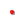
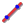
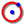
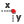
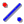
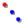
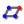

GUI
  
Andere Funktionen wie Zoom, Export, ...
Hier koennen Untermenues/Erklaerungen angezeigt werden, fuer die Menue-Affinen. Klick z.B. mal auf den Punkt oben.
   
CAS point
Eine Tooltip-Box, die beim mouse over angezeigt wird. Funktioniert natuerlich nicht fuer Touch-Devices.